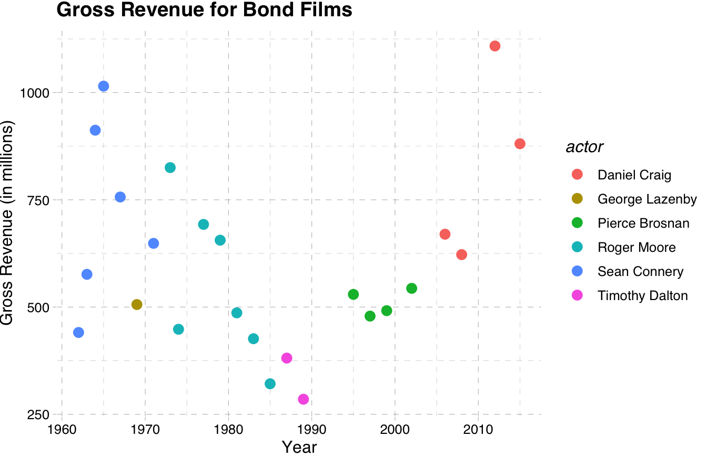
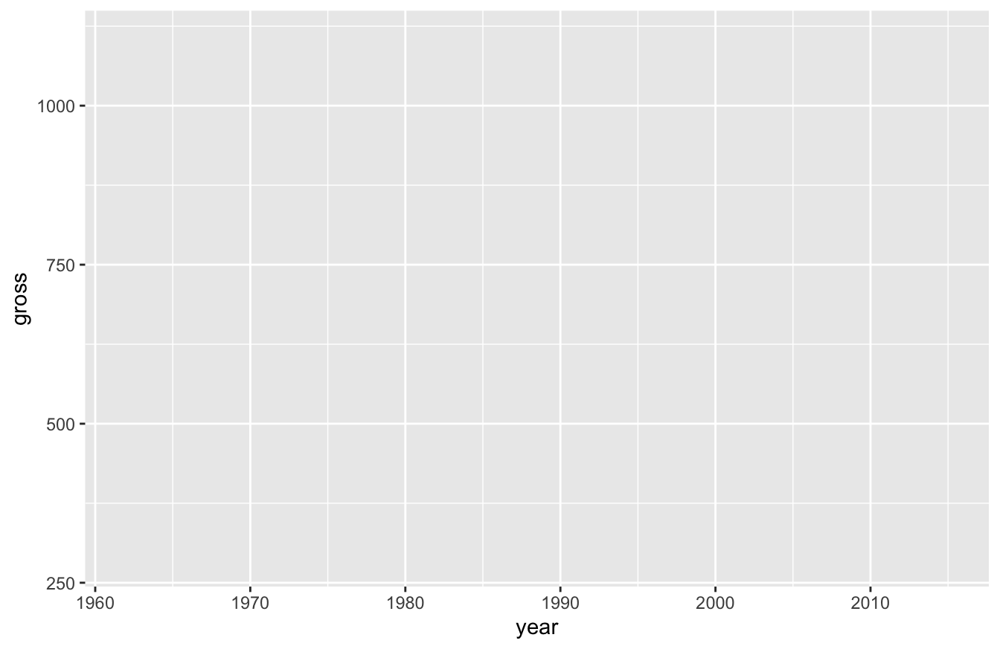
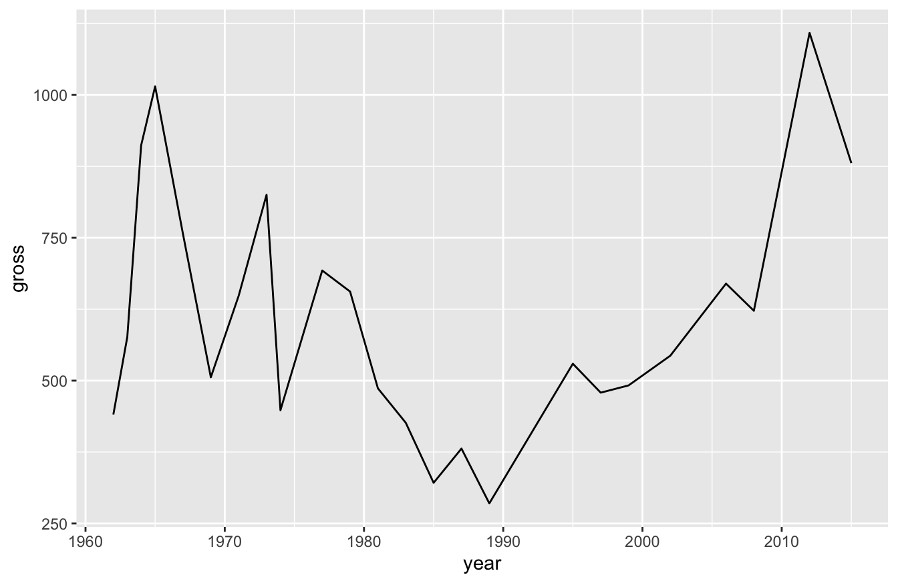
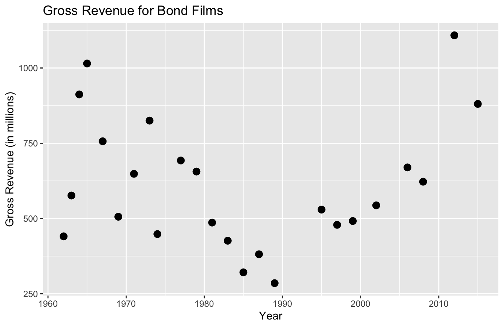
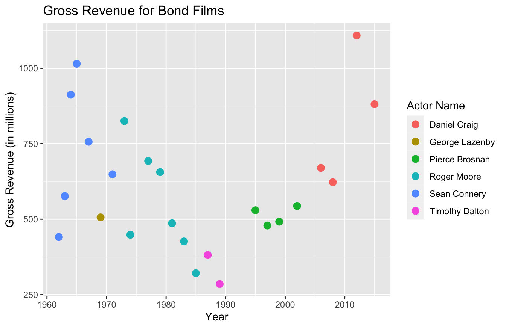
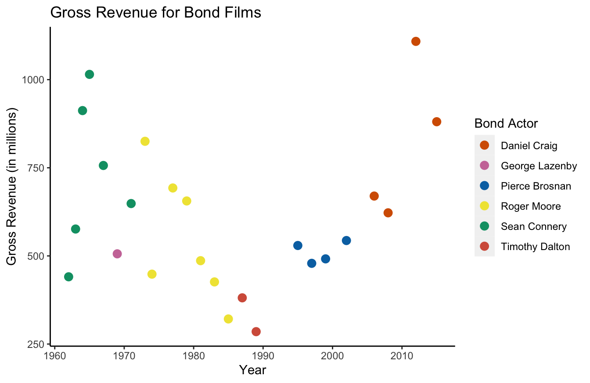
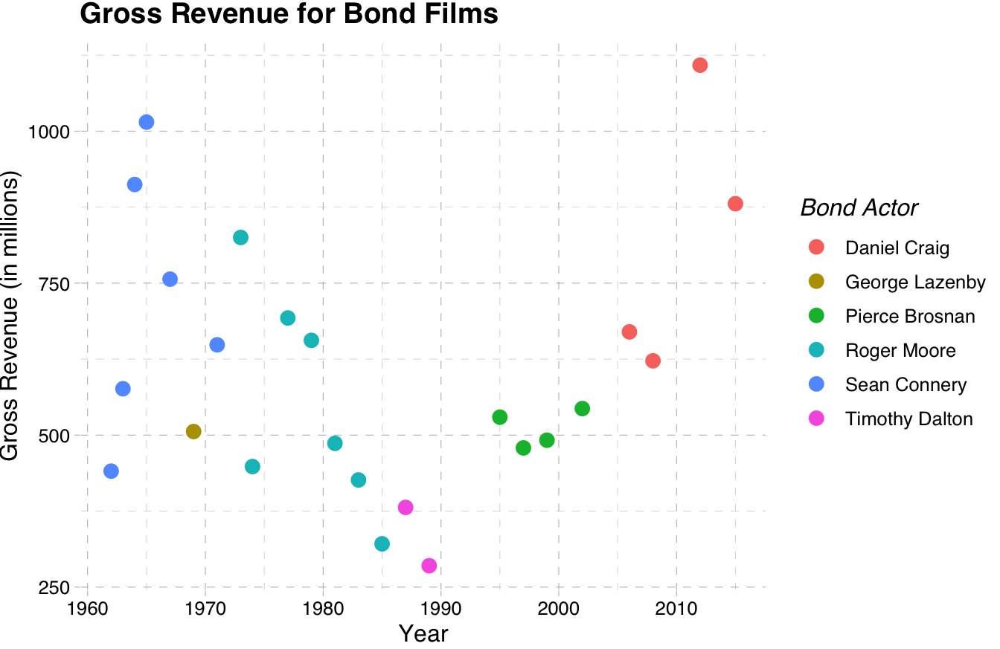

Chapter 10 How to Plot Data in R
Within R, there’s three popular methods for plotting data. The first uses the plot function in R base. The second uses the ggplot2 package, which RStudio developed with their tidyverse package set. The third is plot_ly, which was developed by the “Plotly” company.
The R base version of plot functions is much more subdued and uses simpler graphics. It typically looks something like this:

ggplot2 outputs something more like this:

plotly outputs something similar to ggplot2, but has some built-in interactivity, such as tool tips:
People who build more elaborate data visualizations using R typically prefer ggplot2 or plotly. Those two packages have more robust aesthetics and interactivity than R base plot functions.
10.1 Which R Plot Package is Best?
That question is a solid “it depends!” And it highlights one of R’s greatest strengths and weaknesses. It’s an open-source language, which has led to multiple packages providing similar purposes, but with subtle differences in functionality.
I’d say the base plot package is definitely the “smarter” pacakge. And by that, I mean it often makes an educated guess on how to plot your data.
For example, you can literally run the plot() function on linear regression models, single variables, and data frames, and the function makes a pretty good assumption of what plots you want to see. This is handy for exploratory data analysis.
I would say the default aesthetics for the base package are not great. As you saw in the last section, ggplot2 and plotly add a bit more flare. That being said, most data viz tools are only as good as their developer. If you know how to use color, font selection, and the right data viz effectively, you can make the base plots look good. It just takes more work, in my experience.
For example, I took our Bond data set and made a data viz with the base package. I changed the color, font, and other settings and managed to make it look pretty good. You can see the code and output below:
bond <- read.csv("https://raw.githubusercontent.com/taylorrodgers/bond/main/bond.csv")
bond$actor <- factor(bond$actor)
bond_colors <- c("#7fb7be","#d3f3ee","#dacc3e","#bc2c1a","#7d1538","#454444")
bond_colors <- bond_colors[as.numeric(bond$actor)]
plot(bond$year,
bond$gross,
bg=bond_colors,
col="black",
cex=2,
pch=21,
xlab="Year Released",
ylab="Gross Revenue (in millions)",
main="Gross Revenue for Bond Films",
col.axis="#454444",
col.main="#454444",
col.lab="#454444",
fg="#454444",
family="Droid Sans"
)
legend("top",inset=0.05,
legend=unique(bond$actor),
cex=.9,pch=21,pt.cex=1.2,
pt.bg=unique(bond_colors))
This wasn’t easy to do though. I had to do more research to figure out how to accomplish the visualizaiton above.
I think ggplot2 has a more intuitive syntax. For example, I produce a similar plot to the one with a much shorter script:
library(ggplot2)
bond <- read.csv("https://raw.githubusercontent.com/taylorrodgers/bond/main/bond.csv")
bond$actor <- factor(bond$actor)
ggplot(data=bond,
mapping=aes(x=year,y=gross,color=actor)) +
geom_point(size=3) +
labs(x="Year",
y="Gross Revenue (in millions)",
title="Gross Revenue for Bond Films") +
theme(plot.title = element_text(hjust = 0.5))
You probably noticed that this script is a lot shorter than the last one. It has a similar syntax to the dplyr package. It uses a + operator to add layers to the plot, similar to how dplyr uses %>% to create a series of data transformations.
And best of all, ggplot2 plots look pretty good. It didn’t take too much work to produce a semi-professional looking graph.
The only thing I don’t like about ggplot2 is the default aesthetics. It looks better than base, but it just looks “busy” to me. I don’t like the gray background of the plot and I don’t like the lines. Most data viz professionals advise keeping your plots somewhat minimalistic.
In order for me to make the plot less busy, I have to write a few additional lines of code:
ggplot(data=bond,
mapping=aes(x=year,y=gross,color=actor)) +
geom_point(size=3) +
labs(x="Year",
y="Gross Revenue (in millions)",
title="Gross Revenue for Bond Films") +
theme(plot.title = element_text(hjust = 0.5),
panel.grid.major = element_blank(),
panel.grid.minor = element_blank(),
panel.background = element_blank(),
axis.line = element_line(color="grey"))
This isn’t a big deal to add this, but it is tedious to do so. Thankfully, there are pre-built themes in the ggthemes package that you can use. They have themes that mimic the aesthetics of the Wall Street Journal, The Economist, FiveThirtyEight, and several other well-known data journalism outlets.
Here’s FiveThirtyEight’s template below:
library(ggthemes)
ggplot(data=bond,
mapping=aes(x=year,y=gross,color=actor)) +
geom_point(size=3) +
labs(x="Year",
y="Gross Revenue (in millions)",
title="Gross Revenue for Bond Films") +
theme_fivethirtyeight()
I personally like the pander theme most of all. It provides just enough detail to help the human eye without becoming too busy.
library(ggthemes)
ggplot(data=bond,
mapping=aes(x=year,y=gross,color=actor)) +
geom_point(size=3) +
labs(x="Year",
y="Gross Revenue (in millions)",
title="Gross Revenue for Bond Films") +
theme_pander()
plotly data viz strikes a good balance between intuitive syntax and great default visualizations. It also provides great resources for building interactive web-based applications. I’ve used it extensively now for building Shiny applications that engineers would use to make predictions. The fact that I can get real specific with event tracking and interactions makes it the best for developers.
Here’s an example:
library(plotly)
plot_ly(data=bond,x=~year,y=~gross,color=~actor,size=10)plotly has a somewhat less intuitive syntax though. The functions become a hierarchy of lists. If you look at the code and output below, you’ll notice that I have to specify formatting options with lists:
library(plotly)
plot_ly(data=bond,x=~year,y=~gross,color=~actor,size=10) %>%
layout(title="Gross Revenue for Bond Films",
xaxis=list(title="Year"),
yaxis=list(title="Gross Revenue (in millions)"))This syntax isn’t too hard to learn, but it does require some practice.
10.2 So Which Data Viz Package is Actually the Best?
Many data scientists would say the best method is the one you already know. As I said, if you understand the fundamentals of good data visualization, you can use any tool pretty well. And if you already know one of these methods (or know another tool like Tableau or PowerBI), I say go with that one.
That said, I suggest ggplot2 for those who conduct research. And I will focus on ggplot2 exclusively for the remaining chapter.
The reason I like ggplot2 best is the readable syntax and the ability to use templates. It’s also one many other R programmers know and allows you to easily share your work with others.
10.3 How to Write ggplot2 Scripts
I would have to write a whole book to describe all of ggplot2’s functions and best practices. There are many out there and I suggest you read them if you want to get really, really good at it. Since this book is for researchers who probably want a few plots to illustrate their research, I’ll focus on the basics and show you how to make your visualizations look professional.
The easiest way to think about ggplot2’s syntax is to imagine that you have clear, transparent celluloid sheets of paper. Each one has something drawn on it. The bottom one defines the x and y axes:
ggplot(data=bond,mapping=aes(x=year,y=gross,color=actor))In the script above, we haven’t actually plotted anything yet. All we’re doing is defining the structure of the plot. We’re specifying that the data is the Bond data set and we’re “mapping” aesthetic parameters (mapping=aes()). Within mapping=aes(), we state that the x-axis as the year, the y-axis as revenue, and the color as actor.
If you run the script above, all you’ll see is a blank box:

After we define those values, we can add new layer. This layer will provide the data viz we want. We want a scatterplot, so we’ll use the geom_point() function:
ggplot(data=bond,mapping=aes(x=year,y=gross,color=actor)) +
geom_point()
If you’ll notice, I didn’t need to specify any arguments in the geom_point() function above. That’s because these functions inherit the arguments of the functions before it.
If we want to, we can change this plot to a line plot by swapping out the geom_point() function with a geom_line() function:
ggplot(data=bond,mapping=aes(x=year,y=gross,color=actor)) +
geom_line()
This isn’t a very good plot though. We broke our actors out by color and no Bond actor plays the role across our entire time span. For that reason, the line broke apart. We can turn this into a single line by removing actor from the aes() function below:
ggplot(data=bond,mapping=aes(x=year,y=gross)) +
geom_line()
Now we can see how revenue for Bond films has changed over the years, but we lost the ability to see the Bond actors. What if we want to see one line, but also see how individual actors perform?
Simple! We just layer two visualizations on top of each other!
ggplot(data=bond,mapping=aes(x=year,y=gross)) +
geom_line() +
geom_point(aes(color=actor))
Pay close attention to what we did in the last script. We used the + operator and defined two data visualizations: geom_line() and geom_point(). We defined color in the geom_point() function, rather than the ggplot() function. That prevented geom_line() from inheriting the color argument and breaking out line up again.
Our current visualization isn’t perfect though. I’d like to make the dots bigger so that we can better tell the actor. I can adjust that setting in the geom_point() function:
ggplot(data=bond,mapping=aes(x=year,y=gross)) +
geom_line() +
geom_point(aes(color=actor),size=3)
Now I want you to remember something - you’re layering these visualizations. That means you should consider the order when you build them.
If you look at the script below, I have the geom_point() function before the geom_line() function. That means the line will sit on top of the points, which is less clear than our previous visualization.
ggplot(data=bond,mapping=aes(x=year,y=gross)) +
geom_point(aes(color=actor),size=3) +
geom_line()
10.4 How to Plot Common Data Visualizations in ggplot2
Typically, the most common data visualizations you’ll need to plot include:
- scatter
- bar
- line
- box-and-whiskers
Some people would add pie charts, but there are well-documented reasons online about why pie charts (and doughnut charts) are ineffective as data visualizations. So I won’t cover those.
10.4.1 How to Plot a Scatterplot
This is one we’ve already covered in previous sections. You use the functions ggplot2() and geom_point() to create a scatterplot:
ggplot(data=bond,mapping=aes(x=year,y=gross,color=actor)) +
geom_point(size=3)10.4.2 How to Plot a Bar Graph / Histogram
There are a three functions available for plotting bar graphs:
geom_bar()geom_col()geom_histogram()
All three functions have some overlap in how you can use them to report figures.
geom_bar() is useful for reporting count data by category For example, we may want to see how many times each actor portrayed the Bond character. To do this, you’ll need to map the x-axis to actor and specify the stat argument as “count.”
ggplot(data=bond,mapping=aes(x=actor)) +
geom_bar(stat="count")
You can also use the geom_bar() to report a continuous variable. For example, you might want to see gross revenue by actor. If so, you’ll need to specify the weight argument within the aes() function below.
ggplot(data=bond,mapping=aes(x=actor)) +
geom_bar(aes(weight=gross))
You can also use geom_col() for something similar. geom_col() is a better fit for this type of visualization because it actually produces a stacked bar graph. It’s also simpler code, in that you only need to define the aes() once.
ggplot(data=bond,mapping=aes(x=actor,y=gross)) +
geom_col()
geom_histogram() displays a histogram, which is a special kind of bar chart used to display distribution of the data.
ggplot(data=mtcars,mapping=aes(hp)) +
geom_histogram(bins=12)
As you can see, you only need to specify one variable and the number of bins to get a working histogram.
10.4.3 How to Plot a Line Graph
If you work with time-series data or something similar, the geom_line() function works well for connecting points. You can also use it to overlay two y-axes over one another, which I’ll cover further down below.
As we’ve shown before, here is how you create a line plot:
ggplot(data=bond,mapping=aes(x=year,y=gross)) +
geom_line()
You can also break lines out into groups. Let’s say for example that we wanted to see how Bond revenue changed for each actor as each of their movies were released. More specifically, let’s say we want to see how Daniel Craig’s second film compared to Sean Connery and Roger Moore. This will require some data transformation, as you can see below:
library(dplyr)
bond_alter <- bond %>%
arrange(actor,year) %>%
group_by(actor) %>%
mutate(order=row_number(actor))
ggplot(data=bond_alter,mapping=aes(x=order,y=gross,color=actor)) +
geom_line()
We can see in the plot below that Roger Moore started off strong, but his revenue decreased over time. Daniel Craig and Sean Connery consistently outperformed the rest though.
10.4.4 How to Plot a Box-and-Whiskers Plot
To create a box-and-whiskers plot, you use the geom_plot() function:
ggplot(data=bond,mapping=aes(x=actor,y=gross)) +
geom_boxplot()
In my career, I’ve learned to love box-and-whiskers plots. It’s the best visualization that helps stakeholders who aren’t statistics savvy appreciate variation. I assume it’s because they had to learn how to read these plots in college. Whenever I try to introduce standard deviation as a key performance indicator, they usually don’t understand why that’s important. A box-and-whiskers plot, especially when you compare multiple plots, makes it easier for stakeholders to understand why it matters.
As you could see in our previous visualization, there’s wide variety in results for the Bond actors gross revenue. Pierce Brosnan generated consistent revenue. Roger Moore had a lower median than Brosnan, but had several films do better.
10.4.5 How to Improve Labels and Other Formatting Tips
I’ve worked with many data viz tools and have also mentored a few people now. One thing I always like to tell people is that good data visualizations focus on “the little details.” If you’ve noticed, most of these plots don’t have the best labeling or coloring. Spending an extra 10-15 minutes on these little details makes your work look far more professional and will help your audience appreciate the insights you deliver.
The first thing you should improve is the labels. Most data sets don’t use proper English to describe field names. In our data set, Actor (capitalized) is spelled as actor (lower case).
In larger data sets, we might have multiple fields with more descriptive names. In the Bond example, we could have LeadActress, PrimaryAntagonistActor, SecondaryAntagonistActor, etc. All of those would give us more flexibility in our analysis, but these names make poor labels on a plot.
We can use the labs() function to solve this problem. If you look at the plot below, you can see that I give better labels to our plot:
library(ggthemes)
ggplot(data=bond,
mapping=aes(x=year,y=gross)) +
geom_point(size=3) +
labs(x="Year",
y="Gross Revenue (in millions)",
title="Gross Revenue for Bond Films")
There’s one for the x and y-axis, as well as one for the title. As you can already tell, this labeling is far more descriptive and professional than past labels.
Let’s say we want to add color. As you recall, we simply add color=actor in the aes() function. And to change the legend title, we simply add color="Actor Name" to the labs() function:
ggplot(data=bond,
mapping=aes(x=year,y=gross,color=actor)) +
geom_point(size=3) +
labs(x="Year",
y="Gross Revenue (in millions)",
title="Gross Revenue for Bond Films",
color="Actor Name")
You can also define the color codes you want to use for these plots. Personally, I’d suggest just using the templates I described in an earlier section to do this. The functions to perform these tasks get a bit confusing and the documentation isn’t that great.
With that said, I suggest you focus on scale_manual() functions for defining colors. Execute ?scale_manual in your console to see this documentation on this.
There’s seven manual functions to data viz parameters:
scale_color_manual()scale_fill_manual()scale_size_manual()scale_shape_manual()scale_linetype_manual()scale_alpha_manual()scale_discrete_manual()
If you’ll notice, this relates to the type of plot you’ll use. Since we used a scatter plot and the only thing we changed was the color, we’ll use the scale_color_manual() to dictate specific colors:
ggplot(data=bond,
mapping=aes(x=year,y=gross,color=actor)) +
geom_point(size=3) +
labs(x="Year",
y="Gross Revenue (in millions)",
title="Gross Revenue for Bond Films",
color="Bond Actor") +
scale_color_manual(values=c("#d55e00","#cc79a7","#0072b2","#f0e442","#009e73","#d45e49"))
I’m not a fan of the gray background and the grids used in the default for ggplot2. You can use the theme() function to remove those:
ggplot(data=bond,
mapping=aes(x=year,y=gross,color=actor)) +
geom_point(size=3) +
labs(x="Year",
y="Gross Revenue (in millions)",
title="Gross Revenue for Bond Films",
color="Bond Actor") +
scale_color_manual(values=c("#d55e00","#cc79a7","#0072b2","#f0e442","#009e73","#d45e49")) +
theme(panel.grid.major = element_blank(),
panel.grid.minor = element_blank(),
panel.background = element_blank(),
axis.line = element_line(color="black"))
As you can tell, it gets a bit tedious to remove all these default graphics. This is the trade-off with ggplot2 in my mind. The syntax is intuitive, but improving the aesthetics isn’t something I enjoy.
For that reason, I suggest using the templated themes, such as Few’s “Practical Rules for Using Color in Charts” theme with theme_few() or the “pander” theme with theme_pander():
library(ggthemes)
ggplot(data=bond,
mapping=aes(x=year,y=gross,color=actor)) +
geom_point(size=3) +
labs(x="Year",
y="Gross Revenue (in millions)",
title="Gross Revenue for Bond Films",
color="Bond Actor") +
theme_pander()
Much better! If you want, you can learn to build your own themes at this .
10.5 Things to Remember
- The popular data viz packages for R are
base,ggplot2, andplotly baseis great for data exploration because it makes a good “guess” on what plot you want to seeplotlyis great for its interactive capabilities and I recommend it for app developmentggplot2is best for researcher, statisticians, and data analystsggplot2has the most intuitive syntaxggplot2“layers” visualizations- I recommend using themes for
ggplot2
10.6 Exercises
- Using the mtcars data set and the
ggplot2package, build a scatter plot with hp on the x-axis and mpg on the y-axis. (Hint: don’t forget to uselibrary(ggplot2)anddata(mtcars)first.) - Using the plot you made in the previous question, use color to distinguish the cyl for each point. Be sure to turn the cyl column into a factor first with
factor(cyl). - Add more descriptive labeling to the x-axis, y-axis, and legend. For example, use “Horsepower” instead of “hp.”
- Make the data viz title “Car Performance.”
- Use the
theme_pew()theme from theggthemespackage.